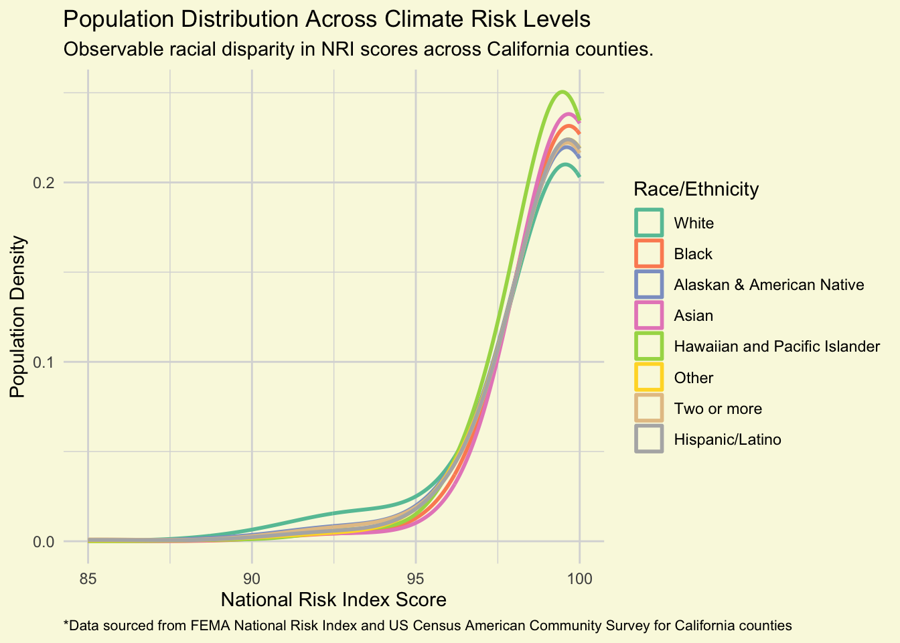

Code
library(tidyverse)
library(janitor)
library(here)The National Risk Index (NRI) is a composite score developed by FEMA that measures a community’s risk to natural hazards, incorporating factors like expected annual loss, social vulnerability, and community resilience. This visual analysis examines how these risk scores are distributed across different racial and ethnic groups in California counties. By combining NRI data with demographic information from the US Census Bureau’s American Community Survey, we can identify potential disparities in climate and disaster risk exposure among California’s diverse populations. We want to visualize an answer to the question: How does climate hazard risk exposure vary across racial / ethnic groups in California?
library(tidyverse)
library(janitor)
library(here)# Read in NRI data
nri_raw <- read_csv(here("data/National_Risk_Index_Counties_807384124455672111.csv"), show_col_types = FALSE) %>%
clean_names()#....Step 1a: see all available ACS variables + descriptions.....
acs_vars <- tidycensus::load_variables(year = 2023,
dataset = "acs1")
#..............Step 1b: import race & ethnicity data.............
race_ethnicity <- tidycensus::get_acs(
geography = "county",
survey = "acs1",
# NOTE: you may not end up using all these variables
variables = c("B01003_001", "B02001_002", "B02001_003",
"B02001_004", "B02001_005", "B02001_006",
"B02001_007", "B02001_008", "B03002_012",
"B03002_002"),
state = "CA",
year = 2023) |>
# join variable descriptions (so we know what's what!)
dplyr::left_join(acs_vars, by = dplyr::join_by(variable == name))
#.................Step 2: write ACS data to file.................
readr::write_csv(race_ethnicity, here::here("data", "ACS-1yr-2023-county-race-ethnicity.csv"))
#..................Step 3: read in your CSV file.................
race_ethnicity <- readr::read_csv(here::here("data", "ACS-1yr-2023-county-race-ethnicity.csv"))# Select columns I'm interested in (NRI score)
nri_clean <- nri_raw %>%
select("objectid", "state_name", "state_name_abbreviation", "county_name", "county_fips_code", "national_risk_index_score_composite", "population_2020") %>%
filter(state_name_abbreviation == "CA")
# Clean column names and separate state and county
ca_race_ethnicity <- race_ethnicity %>%
clean_names() %>%
separate_wider_delim(
col = name, # The column to split
delim = ", ", # The delimiter string
names = c("county_name", "state") # The names for the new columns
) %>%
select(!state) %>%
mutate(county_name = str_remove(county_name, " County"))# Add NRI score to all counties to ACS dataframe
joined <- full_join(ca_race_ethnicity, nri_clean, by = "county_name")plot <- joined %>%
# Filter out "total" and "non-hispanic"
filter(!variable %in% c("B01003_001", "B03002_002")) %>%
# Filter out NAs from NRI score
filter(estimate > 0, !is.na(national_risk_index_score_composite)) %>%
# Density plot with NRI score on x, % of population in that score on Y
ggplot(aes(x = national_risk_index_score_composite, weight = estimate, color = variable)) +
geom_density(alpha = 0, linewidth = 1) +
labs(
x = "National Risk Index Score",
y = "Population Density",
title = "Population Distribution Across Climate Risk Levels",
subtitle = "Observable racial disparity in NRI scores across California counties.",
color = "Race/Ethnicity",
caption = "*Data sourced from FEMA National Risk Index and US Census American Community Survey for California counties",
alt = "Density plot showing population distribution across climate risk scores (85-100 range) by race/ethnicity. All groups peak in the 90-100 range. White populations show the highest density at lower risk scores, while Native Hawaiian and Pacific Islander populations peak highest near score 100, followed by Asian and Black populations. Other racial/ethnic groups (American Indian/Alaska Native, Other, Two or more, and Hispanic/Latino) show comparable distributions to each other."
) +
scale_color_brewer(
palette = "Set2",
# Change variable labels
labels = c(
"B02001_002" = "White",
"B02001_003" = "Black",
"B02001_004" = "Alaskan & American Native",
"B02001_005" = "Asian",
"B02001_006" = "Hawaiian and Pacific Islander",
"B02001_007" = "Other",
"B02001_008" = "Two or more",
"B03002_012" = "Hispanic/Latino"
)) +
scale_y_continuous(breaks = scales::pretty_breaks(n = 3)) + # Less gridlines/ticks
xlim(85, 100) +
theme_minimal() +
theme(
plot.background = element_rect(fill = "#f9f9e0", color = NA), # Change background color
panel.background = element_rect(fill = "#f9f9e0", color = NA),
panel.grid.major = element_line(color = "grey85"), # Darken gridlines
panel.grid.minor = element_line(color = "grey85"),
plot.caption = element_text(size = 8, hjust = 0), # Right adjust caption
)
plot
1. What are your variables of interest and what kinds of data (e.g. numeric, categorical, ordered, etc.) are they (a bullet point list is fine)?
I was interested in composite NRI scores, and the percentage of each racial group in each county. Both of these are numeric. The races themselves were categoric.
2. How did you decide which type of graphic form was best suited for answering the question? What alternative graphic forms could you have used instead? Why did you settle on this particular graphic form?
I tried scatter plots, stacked bar graphs, a heatmap, and a density plot, and found that the density plot was the easiest to interpret and the least “busy”. I also didn’t want to go with a barplot because I did that in my last assignment and I thought it looked quite boring. After looking at the scatter plot I knew I needed something that summarized data across counties so that there weren’t too many points/bars.
3. Summarize your main finding in no more than two sentences.
Native Hawaiian and Pacific Islander populations show the highest concentration near the maximum risk score of 100, followed closely by Asian and Black populations and opposite white populations which had highest concentrations near lower NRI scores. American Indian/Alaska Native, Other, Two or more races, and Hispanic/Latino populations display comparable distributions to each other, falling between these extremes.
4. What modifications did you make to this visualization to make it more easily readable?
My main modification was making the density curves “hollow” or completely transparent because they were overlapping eachother and making it difficult to see where individual cruves were.
5. Is there anything you wanted to implement, but didn’t know how? If so, please describe.
I can’t think of anything else that I wanted to add, but I think that the gridlines and text/size positioning could use some more work. But after changing individual parts for a while I decided that it was good as is. I would have also like to eliminate the gridlines that extend past the graph area on the top and right side of the figure, but could not figure it out.